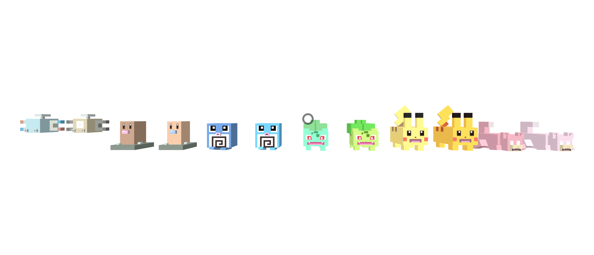

Used the same 3D figures that from Assignment 6, but added a Pokemon, Slowpoke, and have made shiny versions of the Pokemons.

AR markers:
Pokemons can grow in size and become pregnant. When a Pokemon becomes pregnant, the user can see an egg appear on top of the Pokemon and after some time, a smaller Pokemon will appear.